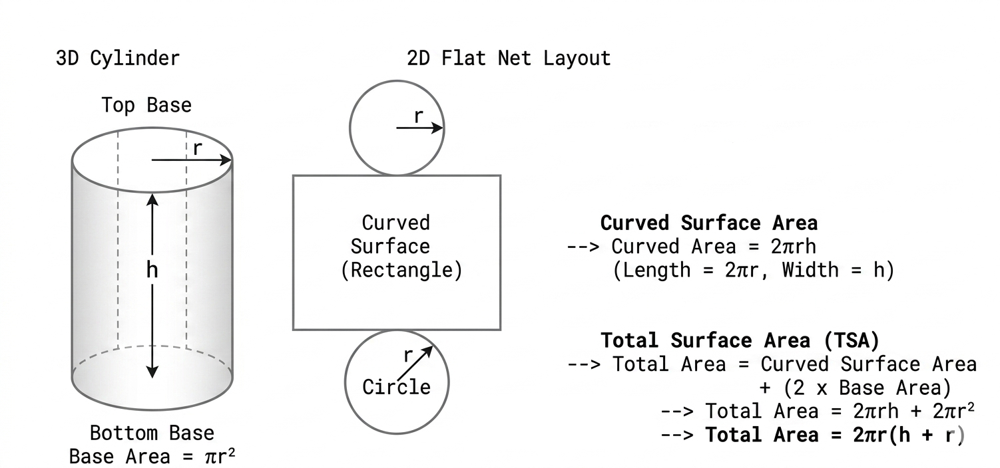

1. Visualizing the Formula
Struggling to remember formulas? Let's take a 3D cylinder and unroll it, make it flat!

Step by Step Breakdown:
- The Two Circular Bases: A cylinder has a top and a bottom circle. The area of one circle is
𝜋r². For both, it is2𝜋r². - The Curved Side Surface: When unrolled, the side forms a perfect rectangle. Its height is
h, and its length wraps perfectly around the circle, meaning the length equals the circle's circumference (2𝜋r). Therefore, the curved surface area is2𝜋rh.
2. Some Practices
Q.1
A solid right circular cylinder has a base radius of 7 cm and a height of 10 cm. Find its total surface area in terms of 𝜋.
Step 1: Identify dimensions: Radius (r) = 7 cm, Height (h) = 10 cm.
Step 2: Apply the formula: TSA = 2𝜋r² + 2𝜋rh
Step 3: Substitute: TSA = 2𝜋(7)² + 2𝜋(7)(10) = 98𝜋 + 140𝜋 = 238𝜋 cm²
Q.2
A cylindrical sports drink can has diameter 6 cm and height 12 cm. Calculate the total surface area of the can and round your answer to 3 significant figures.
Step 1: Find the radius from diameter: r = 6 / 2 = 3 cm.
Step 2: Use the factored formula: TotalSurfaceArea = 2𝜋r(r + h)
Step 3: Caltalculate: TSA = 2 × 3.1416 × 3 × (3 + 12)
Step 4: TSA = 18.8496 × 15 = 282.744 cm² ≈ 282.7 cm²
3. Pros 🙂↕️ and Cons 😔
Pros
Creates practice problems at different levels quickly, helping teachers provide practice.
Cons
The descriptions are not direct observations. Even if you upload an image, AI dont really has the ability to see. Therefore, Students should verify the numerical results and charts before using them as a reference.
4. Teacher Manual
Prompts to help build secondary school math resources:
Template A: Building Math Quizzes
Generate a 3-question quiz targeting Total Surface Area of Cylinders: Question 1 should be a direct calculation; Question 2 should ask students to find a missing height given the total area; Question 3 should be a real-world packaging scenario. Include clear marking schemes.
Template B: Creating Specific Math Analogies
Provide 3 concrete real-world comparisons or tactile exercises to make the curved side area (which unrolls into a rectangle of area 2𝜋rh) intuitive for students.
5. AI Usage
- The cylinder unfolding animation
- To generate the practice questions and solutions
- For optimizing the UI and UX (experience)